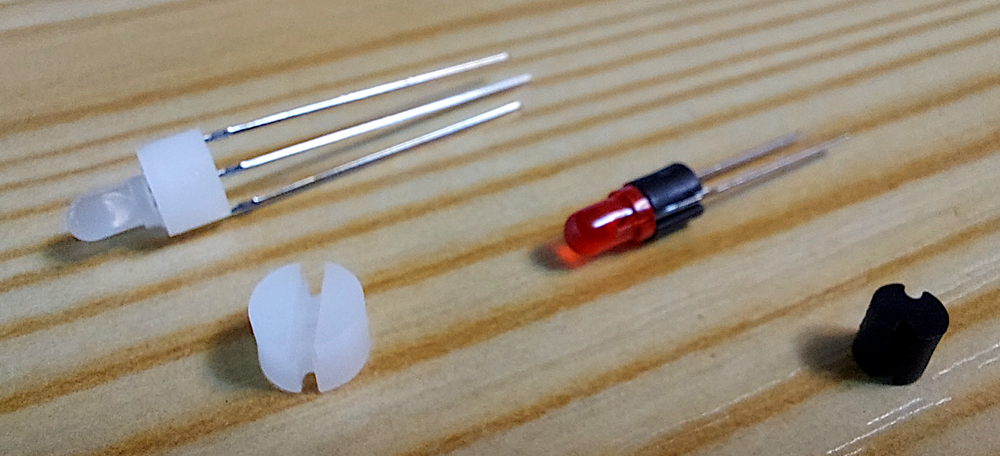
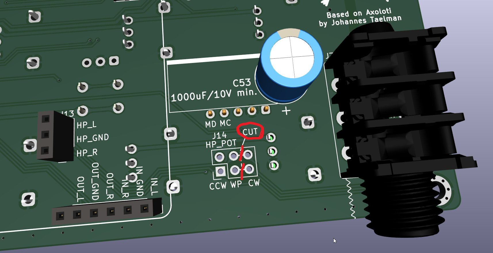
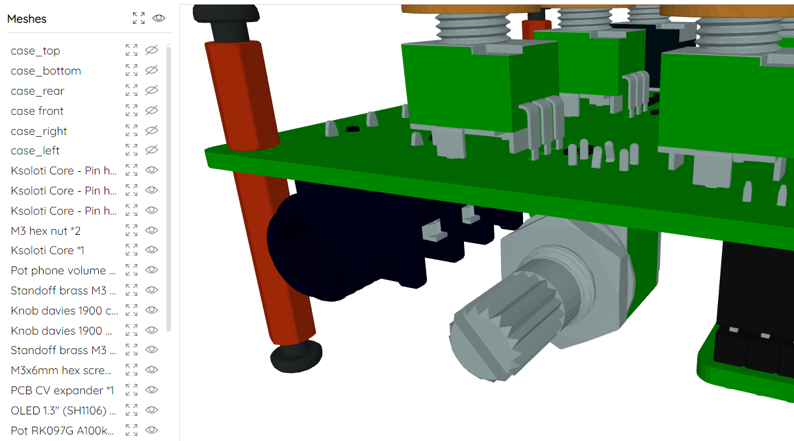
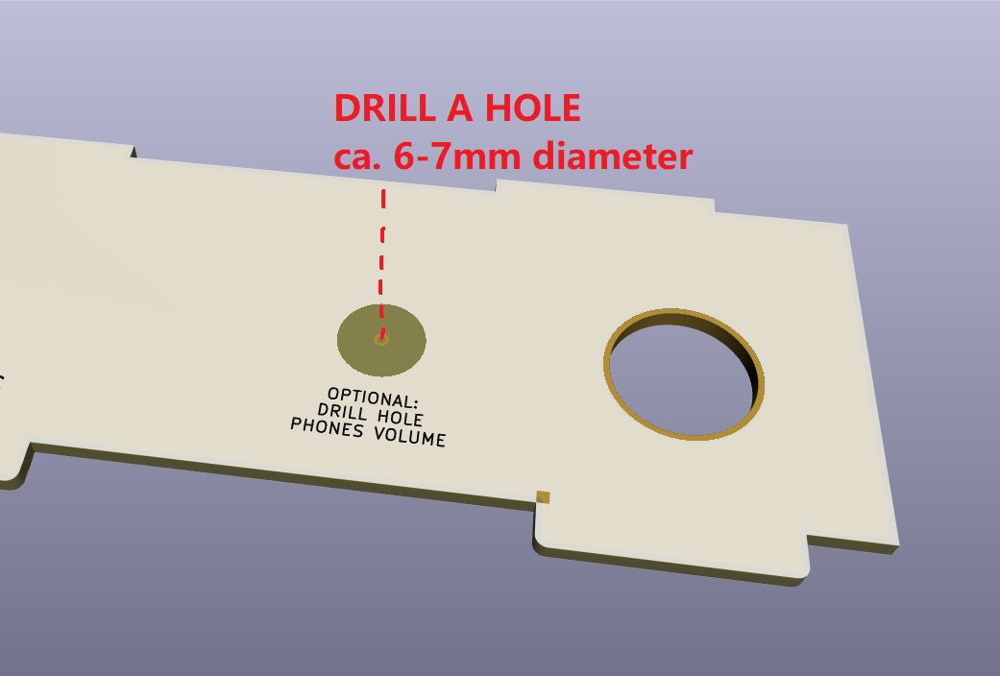

6.1. Gills Build Guide
Check out this 3D model of a fully assembled Gills. In the sidebar on the left you can highlight parts and show/hide them.
(Ignore the potentiometer poking out towards the front. It is an optional headphone volume control, not part of the kit, and you don't have to do anything for Gills to work as intended.)

-
- Solder the pin sockets to the bottom of the Gills PCB.
- 1x6-pin socket, 2.54mm *1
- 1x3-pin socket, 2.54mm *1
- 2x2-pin socket, 2.54mm *1
- 2x12-pin socket, 2.54mm *2 -
- Solder the DC power input jack and then the 5 audio jacks to the bottom of the Gills PCB.
- DC barrel jack *1
- 6.35mm audio jack (NRJ6HF type) *5 -
Now is a good time to solder pin headers to Ksoloti Core if you haven't done so.
- You can insert the headers into the sockets on the Gills PCB to fix them during soldering and get a good fit. No need to aim for a certain distance, the standoffs will take care of that later. Just solder the headers flush to the PCB surface.
- 1x6-pin header, 2.54mm *1
- 1x3-pin header, 2.54mm *1
- 2x12-pin header, 2.54mm *3If you already soldered any headers other than the ones shown here, no worries - you don't have to remove them to be able to use the Core with Gills.
That's all you have to do on the Ksoloti Core! Put it aside for now.
-
- Solder the two 3.5mm expansion jacks on the top side of the PCB.
- Solder the two DIN MIDI jacks to the bottom.
- Install four each of the 10mm and 20mm standoffs. Installing these standoffs now will make it easy to see if the big capacitor that came with your kit should be installed standing or lying flat. It will also simplify alignment of the remaining parts with the top panel.
- Solder the big capacitor to the bottom now. THIS IS A POLARIZED PART! Make sure to install it the right way. Locate the printed strip on the side of the cap (this marks the "minus" or negative side) and align it so it fits the strip on the silkscreen. If it is less than 20mm tall (in other words, if fits well inside the distance the bottom 20mm standoffs create) you can solder it standing. Otherwise bend its legs and solder it lying flat.
- 3.5mm TRS jack through-hole *2
- DIN MIDI jack *2
- M3 standoff, male-female, 10mm height *4
- M3 Standoff, female-female, 20mm height *4
- Electrolytic capacitor, rated for 10V or higher, 1000-2200 uF *1There are five 10mm standoffs and two 12mm standoffs in your kit! You need 10mm here.
Note that we only install four of the five 10mm standoffs here. We'll need the fifth one in the next step.
-
- Place some more standoffs as shown in the video. The last remaining 10mm standoff goes near the 3.5mm jacks on the top of the PCB. Screw it together with a 12mm standoff from the bottom.
- Place one of the three 6mm plastic standoffs on the top (where the silkscreen label for the OLED display is) and screw it together with the other remaining 12mm standoff from the bottom. You guessed it, the plastic standoffs are there to fix the OLED display.
- Place the ten single-gang pots, the two dual-gang pots, and the four switches in their corresponding footprints. DO NOT SOLDER THEM YET. The reason we are not soldering the encoder just yet is that its shaft sticks out slightly longer than the pots.
- M3 standoff, 10mm height *1
- M3 standoff, 12mm height *2
- M3 standoff, plastic, 6mm height *1
- Single-gang potentiometer, 9mm vertical, B10k *10
- Dual-gang potentiometer, 9mm vertical, A/B100k *2
- 6x6mm tact switch with cap *4 -
- Place the top panel of the enclosure on top of the parts. Make sure the panel is lying flush with the pots and 10mm standoffs and ideally does not bend when you push at its corners.
- Check that all 12 pots and 4 switches are aligned well with the panel. If the pots feel too loose to solder reliably, it might be a good idea to temporarily fix them with the included hex nuts. Hand-tight should be fine.
- Turn around the PCB and solder the 10 single pots, 2 dual pots and 4 switches. On each pot solder one small pin first, then check if alignment is still good. Then solder the remaining pins and the large side legs for stability.
- Gills enclosure top panel *1
- M3 hex screw, 6mm length *5 -
- Attach the remaining two plastic standoffs to the OLED display using two M3 hex screws.
- Remove the top panel.
- Place the OLED display in the PCB footprint. Make sure it is aligned flush and reasonably straight (meaning horizontally), then solder the four pins of its header to the PCB.
- Solder the four pins of its header to the PCB. Attention: the pre-soldered header on the OLED module might be a little short, meaning the pins might not poke out through the holes in the Gills PCB. They don't have to - if you can solder them to make good contact, there's no problem. Use your judgement here - If it's hard to make a good connection from the bottom side of the Gills PCB, consider soldering the pins on the top side.- There is no need to fix the two lower plastic standoffs to the Gills PCB, but if your kit came with a set of plastic hex nuts, use them to fix the display by carefully screwing them on. If the kit didn't come with plastic hex nuts, ignore. It is not recommended to use metal nuts here as they could touch nearby parts or component legs, which could lead to unexpected behaviour or short circuits!
- Solder the encoder. It is not as tall as the pots so it does not have a hex nut. The encoder should align itself just fine when you insert it in the PCB footprint.
- OLED module, 1.3 inch, 128x64 pixels, I2C (SH1106 controller), pinout: GND, VCC, SCL, SDA *1
- M3 standoff, plastic, 6mm height *2
- M3 hex screw, 6mm length *2
- Encoder witch push switch (EC11) *1 -
If you have the optional CV expander, now is a good time to install it. Otherwise skip this step (duh).
- The CV expander is installed at the 2x4-pin header J16 on the Gills PCB, however only 2x3 pins are used by the CV expander. Solder the 2x3 pin header to the Gills PCB so that the two pins closest to the PCB edge stay open, as indicated by the green arrows in the video clip.
- Take your CV Expander PCB and solder the four trimmers to its bottom.
- If you want any of the two CV outputs to go from 0V to +10V instead of -5V to +5V, bridge the respective "UNIPOLAR" solder jumper on the top side of the PCB with a dab of solder. You can change this later (you may have to recalibrate the trimmers for the changed output).
- Place the CV Expander on the 2x3 pins and make it fits under the top panel and ideally does not touch it. You can compare heights with the nearby 10mm standoff. If the space seems too tight, clip off the 6.35mm audio output jack pins (already soldered to, and protruding from, the Gills PCB) that the CV expander PCB rests on with its trimmers.
- If you feel that the CV Expander is too wobbly for your taste, you can fix it using hot glue or a strip of double-sided tape between the trimmers and the Gills PCB.
- Solder the pins of the 2x3 header to the CV Expander PCB.
- That's all, the CV expander is now connected to the respective Core pins and expansion output jacks.
- Calibration of the four trimmers to get a good 1V/oct response is described below.
- 2x3-pin header, 2.54mm *1
- CV expander PCB *1
- 50k multiturn trimmer (3266P-1-503) *4 -
Newer kits come with a set of plastic LED spacers. You'll feel like a total pro using them.
- Thread the LED legs into the respective spacer until the plastic LED body touches with the spacer. The 3-pin spacers have a cutout on one side so that the LED pins fit inside. Push the LED down so the spacer lies flush on the PCB Make sure the LED is more or less at a right angle.- LEDS ARE POLARIZED PARTS! For LED1 and LED2, make sure you place the longer leg (the anode or "plus" side) in the hole marked with "+".
- On LED3 and LED4, all three legs have different lengths. The center leg is the longest. The second-longest leg marks pin 1 (usually red color). The shortest leg marks pin 1 (usually green or blue color). There usually also is a pattern in the shape of the legs to indicate where pin 1 is. Follow the graphic pattern on the Gills PCB silkscreen. If you look at the three legs, one of the outer legs will have a square bulge near the LED body. This is pin 1. The other outer leg will have a more triangular bulge (pin 3). If your bicolor LEDS do not have this pattern, do not worry: insert the LED so that the second-longest leg goes in the square hole (where also the square graphic pattern on the PCB silkscreen is).
- An optional step in case you encounter cross-bleed between LED1 and LED2 (meaning when LED1 lights up, you see a bit of light bleeding into LED2's window, or vice versa): Attach insulation tape or heat shrink over the side of the LED body to shield off the light.
The instructions inside this box are for older kits that did not come with spacers for the LEDs yet. The instructions are being kept here for the sake of completeness.Place the four LEDs in the respective footprints. DO NOT SOLDER THEM YET.
Next, we'll do some more top panel action to get the alignment right. Install the top panel and M3 screws back like in the previous step.
Wiggle the LEDs and align them as good as possible with their panel windows before soldering them tight.
This is arguably the trickiest part of the whole build process, but with a little patience and common sense you'll get it right! You may also be able to readjust the LEDs after you've soldered them by slightly bending them in position.
- LED1: Green LED, 3mm *1
- LED2: Red LED, 3mm *1
- LED3, LED4: Bicolor LED, 3mm *2
- LED spacer, 2-pin, 4mm height, 4mm diameter *2
- LED spacer, 3-pin, 4mm height, 6mm diameter *2 -
- Plug the Ksoloti Core into the sockets on the Gills PCB. Secure the Core to the 12mm standoffs with two M3 hex nuts.
- Now place the side and front/rear panels as in the video. Nothing too complicated here, there really is only one way they'll fit. Finally, attach the bottom panel and secure it with the remaining four M3 hex screws.
- Pro tip: attach some rubber feet or furniture "chair leg" pads to the underside. The protruding tabs from the side panels will protect desk surfaces from getting in contact with the bottom hex screws, but even the tabs may still be a bit dangerous to delicate surfaces.
- Ksoloti Core *1
- M3 hex nut *2
- Gills enclosure panels *5
- M3 hex screw, 6mm length *4
- Neutrik plastic nut (NRJ-NUT-B) *4
Congratulations! Your Gills is hereby finished!
Test All
There is a "test all" help patch which will give you an overview of all controls so you can test if everything is behaving as it should. From the Help menu, select Help Patches > ksoloti-objects > ksoloti > gills > test all gills (or similar) and take the patch live. Scroll up, watch the displays and check out the comments!
Calibrate CV Outputs
If you have installed the CV expander you may want to calibrate it now. There is a help patch that should make this task easier. From the Help menu, select Help Patches > ksoloti-objects > ksoloti > gills > cv out gills (or similar).
Take the patch live and follow the instructions in the comments. Ideally you'd use a multimeter or oscilloscope to measure the voltage, but you can also tune by ear using a sound generator that responds to 1V per octave.
Now go ahead and patch some objects or check out the demo patches under File > Library > ksoloti-objects > demos. The idea is that users will add more demos in the future as Ksoloti matures. If you come up with something, feel free to share on Discord or the new Forum!
The ksoloti-objects library included in the Ksoloti Patcher has a set of dedicated objects for Gills under ksoloti/gills (via the Object Finder). /pot p for example will read one of the ten pots and provide you with a unipolar value between 0 and 64. /pot b will do the same but will give you a bipolar value between -64 and +64. /button will read the state of one of the four buttons... and so on.
Check out the Gills Walktrough for an introduction to all Gills-related objects and functions.
On a standard Axoloti/Ksoloti, you can only control the headphone volume per patch using the audio/outconfig object. With a bit of DIY, you can install a physical headphone volume pot near the headphone jack on the front side of the enclosure. The installation is pretty straightforward and you will need a drill for the front panel hole and a utility knife or sharp screwdriver to cut some PCB traces. The required part is something like this, though values as low as 1k or even 500 ohms seem to work better if you can find that value. Linear or log taper will both work, log response is preferred since we're dealing with audio here.
-
- First of all, carefully cut the two traces between the WIPER and CLOCKWISE pins on the pot header J14. It is easy to forget this step and desoldering the pot later to do these cuts sounds like a pain in the ear canal. Since v0.5, the traces are on the top side of the Gills PCB.

-
- Solder the pot like in the picture (but probably without the hex nut and spacer shown in the 3D model).

-
- Drill a hole of about 6-7mm diameter in the front part of the enclosure. There is a guide mark on the inner side of the panel showing you the exact position, but you may want to double-check with the dimensions of the actual pot you're using.
Be careful not to breathe in the dust when you drill the PCB! PCB material contains tiny fibreglass particles which are bad for your lungs!
- For a cleanly cut and good-looking outside hole, it may be good practice to first drill a smaller than required hole from the inside via the guide mark, then carefully widen the hole from the outside using a drill bit with the correct size, resulting in a cleaner outside look of the hole's edges. I'm not an expert, just sharing what worked for me. There are probably more professional ways to make good-looking drill holes, like taping up the drill area, deburring the drill hole etc.
- Alternatively, depending on the knob you'll be using, you can drill a hole big enough for the knob so that it lies partly recessed inside the enclosure. Thonk's Tall Trimmer Toppers are a good candidate (For T18 shaft pots anyway). These are 14mm in diameter so you'll probably need to drill a 15-16mm hole for them to fit.

If you have a different size potentiometer or want it positioned somewhere else, you can wire it up to J14 as per the labels: counterclockwise (CCW), wiper (WP), clockwise (CW) pins then install it wherever. Don't forget to cut the default jumper connections on J14 like in step 1 above!
Since v0.5, a digital microphone header has been added to the Gills PCB which can optionally hold an Adafruit PDM Mic Breakout board. It is a nice option especially considering the price of around 5 USD. It will not give you studio-grade audio quality and is a bit on the quiet side, but you'd be surprised how clear these small mics can sound. You can also use it as a control or drum trigger by tapping on the case. Make sure you get the version with 2.54mm pin header (NOT the so-called 4-JST SH connector).
You can turn on the digital mic using the ksoloti/audio/inconfig digital mic object. Note that you can't use the mic and the line inputs simultaneously due to hardware limitations. You can switch between line-in and mic on a per-patch basis though!
The Gills v0.5 enclosure has a small microphone hole in that position.
- Adafruit PDM microphone breakout with 2.54mm header *1
Note that the 3D model in the below screenshots does not match the version with 2.54mm pin header. Let's just act as if that dark gray header on top of the breakout didn't exist. (This is the aforementioned 4-JST SH connector, which we DO NOT WANT.)
When you install the breakout board, make sure it is close to the top panel but fits under it. Take the nearby pots as height reference. A millimeter or two of breathing space between mic and top panel won't hurt, and any distance will likely not affect the sound much.
You will also need to solder an additional 2-pin header on the Core (just south of H1, the two pins are labeled MC/MIC_CLK and MD/MIC_DATA):
- 1x2-pin header, 2.54mm (Core PCB) *1
...and a matching 2-pin socket on the Gills PCB:
- 1x2-pin socket, 2.54mm (Gills PCB) *1
Or you can run wires or think of something else to make those two connections.